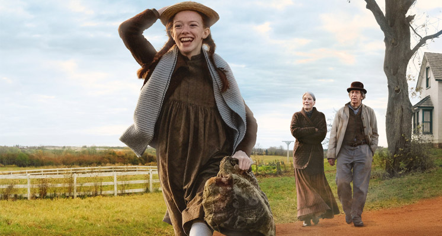

06/06/2021 às 16:10 • Ana Carolina M. Ganzert
➱Assista à The Queen's Gambit na Netflix
O Gambito da Rainha conta a história de Beth Harmon (Anya Taylor-Joy), uma menina órfã que se revela um prodígio do xadrez. Mas agora, aos 22 anos, ela precisa enfrentar seu vício para conseguir se tornar a maior jogadora do mundo. E quanto mais Beth aprimora suas habilidades no tabuleiro, mais a ideia de uma fuga lhe parece tentadora.
➱Assista à Stranger Things na Netflix
Quando um garoto desaparece, a cidade toda participa nas buscas. Mas o que encontram são segredos, forças sobrenaturais e uma menina.

- The Haunting of Bly Manor
➱Assista à The Haunting of Bly Manor na Netflix
Morrer não quer dizer partir. Uma babá adentra um mundo de segredos sinistros neste romance gótico do criador de "A Maldição da Residência Hill".


- The Haunting of Hill House
➱Assista à The Haunting of Hill House na Netflix
Entre o passado e o presente, uma família dividida confronta memórias assustadoras do antigo lar e dos eventos aterrorizantes que os expulsaram de lá.
➱Assista à Hunter x Hunter na crunchyroll
Hxh é uma série de anime que conta a história do jovem Gon Freecss. Ele sonha em se tornar um hunter — um membro licenciado da elite da humanidade que pode rastrear tesouros, lugares, pessoas e até criaturas estranhas — para encontrar o pai, um dos mais famosos hunters do mundo.

➱Assista à The Promised Neverland na Netflix
Três crianças descobrem que o orfanato onde vivem não é nada do que eles pensavam. Agora, têm que liderar o grupo todo num arriscado plano de fuga.
➱Assista à Rick and Morty na Netflix
O brilhante cientista beberrão Rick sequestra Morty, seu neto aborrescente, para viver loucuras em outros mundos e dimensões alternativas.
➱Assista à Anne with an E na Netflix
Neste filme baseado no livro "Anne de Green Gables", uma impetuosa órfã é adotada por engano por um casal de irmãos solteirões do interior.

➱Assista à The Office na Prime Video
Esta versão americana de "The Office" é uma comédia que gira em torno do cotidiano de um escritório. Esta sátira descreve a vida dos funcionários da fábrica de papel Dunder Miffin, situada em Scranton, na Pensilvânia. Entre os personagens está Michael Scout (Steve Carell), o gerente regional da empresa.